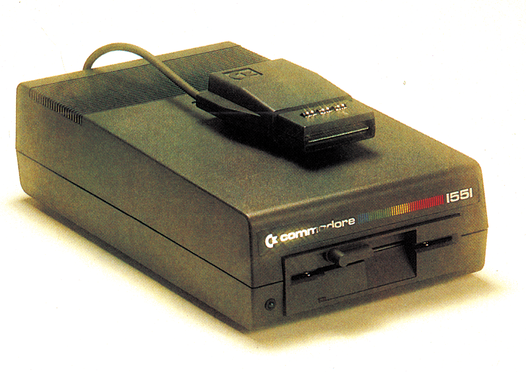
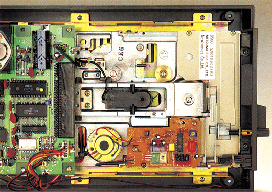
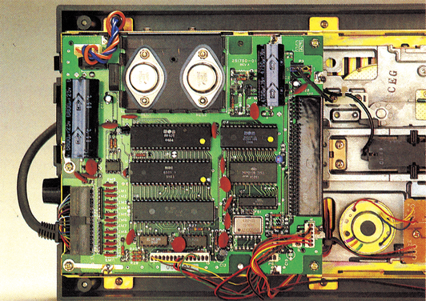

Der C 16 bekommt Flügel
Nun gibt es auch ein eigenes Diskettenlaufwerk für den C 16 und den Plus/4. Es nennt sich 1551.

Schon ein paarmal dürften Sie wohl erstaunt auf Anzeigen oder Überschriften von Artikeln geblickt haben, als Sie dort von einem Diskettenlaufwerk mit dem Namen 1551 lasen.
Nun, vielleicht handelt es sich um den Umbau eines Fremdherstellers, der sich dazu die 1541 vorgenommen hat. Falsch! Bei der 1551 handelt es sich in der Tat um ein völlig neues Gerät, das von Commodore eigens für den C 16 und den Plus/4 entwickelt worden ist (Bild 1).
Wolf im Schafspelz?
Das oben Gesagte wird sofort deutlich, wenn man sich das neue Laufwerk einmal gründlich ansieht. Von der schwarzen Farbe, passend zum C 16, wollen wir gar nicht reden. Von der Tatsache, daß die 1551 ein Knebellaufwerk enthält (zum Vergleich: Bei der 1541 handelt es sich in der Regel um Laufwerke mit Klappverschluß), lassen wir uns auch nicht sonderlich beeindrucken. Das erhöht lediglich die Gesamtqualität des Geräts (siehe Bild 2).

Wichtig sind jedoch die »Innereien«. Das fängt beim Verbindungskabel zum Computer an. Betrachtet man sich die Rückseite der 1551, so fällt sofort das Fehlen der Anschlüsse für den seriellen Bus auf. Stattdessen haben wir ein Kabel vor uns, das in einem kleinen Kästchen endet.
Bei diesem Kabel handelt es sich um die Verbindung zum Expansion-Port des Computers. Ja, Sie haben ganz richtig gelesen: zum Expansion-Port! Das Diskettenlaufwerk wird also nicht mehr über den seriellen Bus des C 16 oder des Plus/4 betrieben, wir haben vielmehr eine Verbindung, die im Modulschacht des Computers Platz findet. Das bringt natürlich gewisse Probleme mit sich.
Einmal muß der Expansion-Port durchgeschleift werden, um auch noch andere Geräte aufnehmen zu können, zum anderen kann die 1551 deshalb ganz sicher nicht an den C 64 angeschlossen werden. Der C 64 verfügt nämlich über einen gänzlich anderen Expansion-Port, sowohl hinsichtlich der Belegung als auch in bezug auf die Kontaktabstände. Hier sind unter Umständen wieder die Bastler gefordert. Vielleicht gibt es schon bald einen Adapter für den C 64, der die 1551 auch für diesen Computer interessant werden läßt.
Interessant wäre die 1551 nämlich in zweierlei Hinsicht. Erstens ist sie äußerst preiswert. Normalerweise wird sie für unter 400 Mark verkauft (trotz der besseren Qualität im Gegensatz zur 1541). Zweitens ist die 1551 schneller als beispielsweise die 1541 und das um den Faktor 4.
»Floppy-Innereien«
Dieser kleine Geschwindigkeitsfaktor ist aber wiederum »Verschwendung« von Commodore. Ein genaueres Studium der 1551 läßt nämlich zur Gewißheit werden, was viele von Ihnen vielleicht schon vermuten: Das Kabel, das die 1551 mit dem C 16 verbindet ist ein 16adriges Parallelkabel. Es besteht also keine langsame serielle Verbindung mehr zum Computer, sondern eine sehr schnelle parallele, deren Geschwindigkeit jedoch leider nicht ausgenutzt wird. Hier sind wiederum die Freaks angesprochen, denn ein Speeder für die 1551 muß in der Entwicklung ein reines Vergnügen sein.
Schraubt man die 1551 auf, so wird sofort die neue Platine sichtbar (Bild 3). Auch hier keine Ähnlichkeit zur »alten« 1541. Die neue Platine ist um fast die Hälfte kleiner und enthält vollkommen andere Bauteile zur Steuerung des Laufwerks.

Das Herz der 1551 ist ein guter alter Bekannter, nämlich der Prozessor mit der Bezeichnung 6510, der auch schon im C 64 Verwendung findet. Was es dabei mit der Bezeichnung 6510T auf sich hat, konnte bis Redaktionsschluß nicht in Erfahrung gebracht werden. Der Unterschied zwischen dem 6510 und dem 6502 besteht in der Tatsache, daß der 6510 zusätzlich einen echten I/O-Port besitzt und somit auch für Steuerungszwecke eingesetzt werden kann.
Weiterhin befindet sich auf der Platine ein Baustein, der bisher in der Serie 700 der Commodore-Personal Computer eingesetzt wurde. Es handelt sich um einen TIA 6525, wobei TIA die Abkürzung für »Triport Interface Adaptor« ist. Dieser TIA übernimmt in der 1551 die Steuerungsaufgaben, die in der 1541 von zwei VIA 6522 erledigt wurden. Dafür enthält der TIA 6525 auch drei Ein-/Ausgabe-Ports. Ein VIA 6522 besitzt nur deren zwei.
Die aufwendige Elektronik im Analog-Teil der 1541-Platine wurde in der 1551 durch eine Hybridschaltung ersetzt, wie sie auch schon in der 1570 und der 1571 Verwendung findet.
Der Befehlssatz
Außer der Optimierung mancher Befehle in deren Ausführung, konnten nur wenige Änderungen zur 1541 festgestellt werden. Die 1551 enthält den gleichen Befehlssatz wie die 1541. Den Befehlen werden auch die gleichen Parameter mitgegeben. Lediglich zwei neue Befehle wurden hinzugefügt.
Die beiden neuen Befehle sind »%R« und »%S«, wobei der erste Befehl zur Einstellung der Wiederholungen bei Lesefehlern und der zweite zur Einstellung des Sektorabstandes für das Schreiben von Files dient. Zwei leistungsfähige Befehle also, die bei richtiger Anwendung im Zusammenhang mit anderen Programmen entweder zu einer schnelleren Floppy oder einer besseren Fehlerbehandlung führen.
Die Routine zum Formatieren einer Diskette wurde stark beschleunigt. So benötigt der Formatiervorgung pro Diskette nur 20 Sekunden, im Gegensatz zu den 90 Sekunden mit der 1541. Auch der Leerinhalt von Blöcken nach dem Formatieren wurde endlich korrigiert. Der Inhalt bei der 1541 mit »4B 01 01...« wurde durch einen Fehler im DOS verursacht, den die 1551 nicht mehr enthält. Hier lautet der Leerinhalt richtig »00 00 00...«.
Eingefügt wurde in das neue Betriebssystem der 1551 auch eine automatische Anlaufsteuerung. Das heißt, daß der Laufwerksmotor anläuft, sobald eine Diskette in das Laufwerk eingelegt wird. Diese Maßnahme ermöglicht ein schonenderes Zentrieren der Disketten im Mittelloch und wurde auch bei der 1570 und der 1571 schon realisiert.
Bisher konnten wir keine Kompatibilitätsprobleme zur 1541 am C 16 oder am Plus/4 entdecken. Alle Programme, die auf dem C 16 mit der 1541 arbeiteten, funktionierten auch mit der 1551. Auffallend war lediglich der Geschwindigkeitsunterschied zur 1541. Hier kamen zwar keine berauschenden Zeiten zustande, er fiel aber immerhin angenehm auf.
Eine unangenehme »Angewohnheit« der 1541 wurde jedoch auch der 1551 »beschert«. Es handelt sich um das Anschlagen des Schreib-/Lesekopfes an die Arretierung der Null-Position. Zum Glück ist die 1551 von der Stabilität des Laufwerks her sehr viel besser als die 1541, so daß das immerhin sehr unangenehme Anschlagen keine nachteiligen Folgen im Dauerbetrieb haben dürfte. Es handelt sich in diesem Fall wohl eher um einen Kampf mit den Gehörnerven des Benutzers.
Insgesamt also wohl eine gute Sache, vor allem für den Preis. Für nur knapp 400 Mark erhält der C 16 oder Plus/4 Anwender ein leistungsfähiges und stabiles Gerät mit vielen Vorzügen im Gegensatz zur Datasette.
(ks)